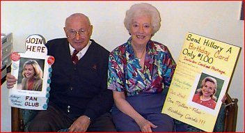
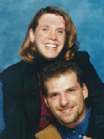

|
First Lady Fans

Ruth and Gene Love
Silver Spring, MD
http://www.voyager.net/hillaryfans/
Gene and Ruth Love started the first-ever Hillary
Rodham Clinton Fan Club after learning about Mrs. Clinton
in the press. “Seven weeks before the election in 1992
the media had so much about Mrs. Clinton. There was a lot
written about her in the newspapers and we liked what we
read. We thought she was a special person. Wouldn't it be
great to let this lady know that there are people out
there who support and admire her?”
She and her husband, Gene, called the Little Rock
campaign office and local Democratic party offices for
permission to start a fan club. Now, four years later,
the Loves preside over an organization with 22,000
all-volunteer members and 165 chapters, eight of which
are abroad.
“It's become international. Our chapter in India
started out with 100 members almost immediately,”
remarked Ruth.
The couple showed off pictures of the doll and other
photos of the conference from their “Hillary Room” in
their apartment. “When we came up with this little tiny
idea of a fan club. We had no idea it would turn into
this.”
Now the Loves' phone rings constantly with potential
members seeking information.
“This is really more than a full time job for us. I
think after this we're going to retire for the second
time,” she and Gene joked.
|
 |
Four Year View
by Elizabeth Carey
Cincinnati, OH

“This election year, I've spent a lot of time asking
myself a famous question. "Are you better off now than
you were four years ago?"Am I? Are my husband and myself
happier now during the Clinton presidency than we were
during the Reagan/Bush years? The answer has to be an
over-whelming yes.
“In 1991, both my husband and myself were working in
low-paying blue collar jobs; I worked at a copy shop and
he worked as a security guard. Together we made just a
little over $21,000 a year. We had no health insurance,
we had no life insurance, we had two cars that we feared
would fall apart every time we got into them, we lived in
an apartment in one of the worst sections of Cincinnati,
we fell behind in our payments to everyone and found
ourselves thousands of dollars in debt. Everyday we
worried about "what happens if I lose my job?"
“This year, due to an increased combined income of
nearly $40,000, my husband and I moved into a two
bedroom, two bathroom house with decks overlooking the
city, fireplaces and a jacuzzi. President Clinton's
investment in the internet has provided me with a
creative technical outlet for my skills. Because of
President Clinton's investment in education, my husband
has just completed his third year of college, working
toward his Bachelor's Degree in Horticulture. President
Clinton's tax incentive for college students, will allow
me to return to school in the winter to get my Master's
in English, with my goal being returning to the teaching
career I couldn't afford to follow. We both have health
insurance, we have a savings account that actually has
money in it, we have a computer, two newer cars and best
of all, job security.
“President Clinton's policies have made all the
difference in our lives. I can't wait to see what the
next four years under a Clinton/Gore Administration will
bring.”
|
Spotlight: Kelvin Davis and His
Youth Campaign
Kelvin Derrell Davis is proof that age definitely
does not make a difference when it comes to working for
the President's re-election. An eleven-year-old sixth
grader at Pearman Elementary Schoool in Cleveland,
Mississippi, Kelvin is a young Democrat and has no
doubt that President Bill Clinton has earned a second
term in the White House. Since early this spring Kelvin
has worked to support his beliefs by encouraging
eligible voters to make sure they are registered by
deadline. Thus far, Kelvin has been instrumental in
registering six voters, two of which are his older
brothers.
Kelvin is targeting college Freshmen and has staked
out a local community corner for his registration
efforts. During a recent visit to Washington, D.C.,
Kelvin had the opportunity to visit the Clinton/Gore
national campaign headquarters. While there he obtained
bumper stickers and other literature concerning the
1996 campaign to help him with his goal.
Kelvin is a firm supporter of the Clinton/Gore
ticket because for as long as he can remember Democrats
have always cared about the common citizen. He feels
that the Clinton Administration supports issues that
are important to him, like making sure that young
children can't purchase tobacco, supporting education,
improving the economy and fighting crime.
Kelvin is a Principal's and Superintendent's list
scholar. He has one sister and four brothers, and is
the second youngest son in the Davis family.
|